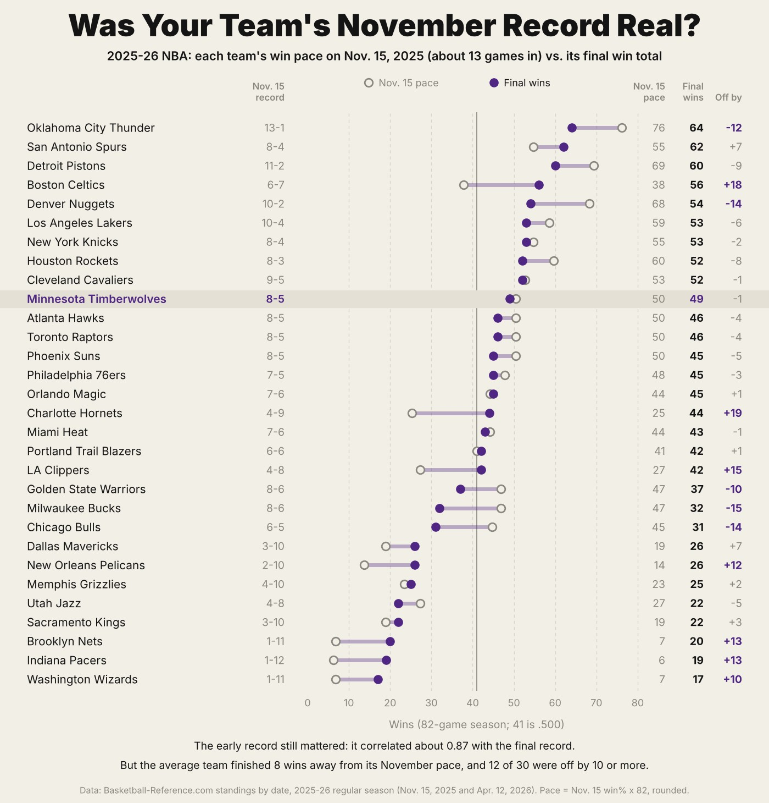

I'm a "just give me the answer" person. With a physics and computer science background, my first move on almost any question is to go find the data. So I've been challenging myself with a book that pushes back on that instinct: The Tyranny of Metrics by Jerry Z. Muller.
It isn't an anti-numbers book. Its publisher sums up the argument well: metrics "can be beneficial" when "used as a complement to judgment based on personal experience." The trouble starts when "we've gone from measuring performance to fixating on measuring itself." Some things we care about need exploration, creativity and a certain fuzziness, and forcing a clean number onto them can make them worse.
Then I heard the same idea on an NBA podcast. The host said their approach is to look at the data and ask what confuses them, then go watch the games. Sometimes the tape confirms it. Sometimes you realize you watched two plays and decided a guy was good or bad. And early in the season, they said, everything is fuzzier. That stuck with me, so I went and checked it.
The short version
- The best basketball metrics already build in humility. EPM, from Dunks & Threes, leans on a player's expected level early in the season and on what actually happened later.
- Early numbers are right on average and wrong about specific teams. In 2025-26, records on November 15 correlated about 0.87 with final records, but 12 of 30 teams finished at least 10 wins away from their November pace.
- When a number becomes the goal, it stops measuring the thing. That's Goodhart's law, and it shows up in hospitals, sales floors and box scores, not just spreadsheets.
1. What a good metric gets right
The podcast host is a big fan of Dunks & Threes and its all-in-one stat, EPM (Estimated Plus-Minus). EPM estimates a player's "predicted contribution to the team, in points per 100 possessions." It combines box-score stats, tracking data for defense and possession-level plus-minus.
What I like about it is how it handles uncertainty. In the site's own words, "early-season values lean on the expectation, and late-season values on what actually happened," and "a player with few minutes stays close to what they were expected to be." It also notes that "each stat stabilizes at a different rate." So the metric isn't pretending ten games tell the whole story. It blends what it knew before with what it's seeing now.
It also holds up. In a 2020 test run by EPM's creator (who disclosed the conflict of interest), EPM explained the next season's team ratings with less error than the other metrics tested, including RPM, RAPTOR, BPM and PER.
Even the good stats are best guesses. The creator of ESPN's Real Plus-Minus pointed out in June 2026 that the popular ones don't come with error bars. Even Victor Wembanyama's defensive rating could be off by about two points either way. A single number hides that.
2. November lies a little
To test the "early season is fuzzy" idea, I pulled every team's record on November 15, 2025, about 13 games into the season, turned it into an 82-game pace, and compared it with where each team actually finished.


Two things are true at once. The early record wasn't noise: it correlated about 0.87 with the final record, and the Thunder, Pistons and Spurs looked good in November and were good in April. My Timberwolves were 8-5, on a 50-win pace, and won 49.
But the average team finished about 8 wins away from its November pace, and 12 of 30 missed by 10 or more. The Celtics started 6-7 and won 56. The Hornets started 4-9 and won 44. The Bucks started 8-6 and won 32. If you'd made a confident call on any of those teams in mid-November, you'd have been wrong by a lot.
That's what "fuzzy" means in practice. The data is right about the league and can still be wrong about the team you care about. Small samples behave this way everywhere. Here's an illustration with a shooter whose true skill is 36% from three.
A great shooter and a bad one can look identical after 25 attempts. One analysis of team shooting in Italy's top league found it took around 300 attempts before the three-point percentage settled within 5%. A player taking seven or eight threes a game needs about 40 games to get to 300.
3. The loop
So what do you do with numbers you can't fully trust yet? The podcast's answer, and the one I'm adopting, is a loop:
Each pass makes the question sharper.
The data is good at telling you where to look. The tape is good at telling you why. Neither is enough alone. Pure eye test gives you the "I watched two plays" problem. Pure numbers can't tell you whether a defender's rating is good because of him or because of the four guys around him.
The same loop works away from basketball. A dashboard says a process got slower last month. That's the confusion. You go stand where the work happens, or talk to the people doing it, and see what changed. Then you go back to the data and check whether what you saw explains the whole drop or just one bad week.
4. When the number becomes the goal
Muller's bigger worry isn't noisy numbers. It's what happens when people are judged by them. Economist Charles Goodhart put it this way: "Any observed statistical regularity will tend to collapse once pressure is placed upon it for control purposes." The popular version, usually credited to anthropologist Marilyn Strathern, is shorter: "When a measure becomes a target, it ceases to be a good measure."
One example in Muller's book is surgical scorecards, which the publisher says "may increase deaths." The worry is easy to see: if surgeons are ranked on death rates, the safest move for a surgeon's numbers is to turn away the sickest patients, the ones who need surgery most.
You can find this anywhere a number is tied to a reward:
- Support tickets: "average time to close" improves when tickets get closed fast and reopened later.
- Sales calls: a calls-per-day target gets you lots of short calls.
- Basketball: a player chasing a stat line, padding rebounds that a teammate would have grabbed anyway.
None of these numbers is bad. They just stop meaning what they meant once people start aiming at them.
5. What doesn't get counted
The flip side is the stuff that's hard to count, which tends to get treated as if it doesn't matter. There's a name for that: the McNamara fallacy, after Robert McNamara, whose Vietnam-era Pentagon tracked things like enemy body counts. Public opinion researcher Daniel Yankelovich laid it out in a 1971 speech in four steps: measure what's easy, ignore what isn't, decide it doesn't matter, then decide it doesn't exist.
In basketball that's defense. The box score counts the steal, not the rotation that stopped the pass. Some of what wins games never shows up in a stat.
6. How I'm using numbers now
I'm not giving up on data. I'm trying to use it better. Here's what that looks like in practice:
- Start with the numbers, and write down what doesn't make sense.
- Ask how much is behind the number. Thirteen games? Twenty-five shots? Ask for a range, not just one value.
- Go look at the real thing: the tape, the process, the customer.
- Come back and check whether what I saw holds up across all the data, not just the two plays I remember.
- When a number becomes a target, ask how someone could hit it without doing the thing it was supposed to measure.
- Remember what isn't in the data. Easy to count and important aren't the same thing.
I still want the answer. I've just accepted that the answer usually comes from going back and forth, not from one number.
A note on the data. The team chart uses Basketball-Reference standings for November 15, 2025 and the season's final day, April 12, 2026. The shooting chart is an illustration built from simple probability, not real player data. The podcast host's comments are paraphrased.
Sources and further reading
- Jerry Z. Muller, The Tyranny of Metrics (Princeton University Press), and the publisher's description.
- Dunks & Threes, "About EPM and Methodology," and "NBA Player Metric Comparison" (June 2020).
- Jeremias Engelmann, "An NBA first: Introducing standard errors for box-score metrics," via Royce Webb, June 2026.
- Basketball-Reference.com, 2025-26 NBA standings by date.
- Basketball Analytics Lab, "Finding Stability: When Early-Season Basketball Analytics Start to Matter," September 2024.
- Goodhart's law and Strathern's wording, via "A New Morality of Attainment (Goodhart's Law)," Unintended Consequences.
- "McNamara fallacy," Wikipedia, for Yankelovich's 1971 remarks.